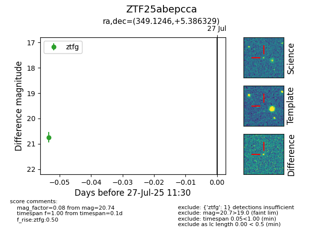

Target ZTF25abepcca at 2025-07-27 11:30, see:
FINK: fink-portal.org/ZTF25abepcca
Lasair: lasair-ztf.lsst.ac.uk/objects/ZTF25abepcca
ALeRCE: alerce.online/object/ZTF25abepcca
alt names
ZTF25abepcca (ztf,fink)
coordinates:
equatorial (ra, dec) = (349.1246,+5.38633)
galactic (l, b) = (84.1719,-50.20237)
photometry
last ztfg=20.74
1 ztfg detections
